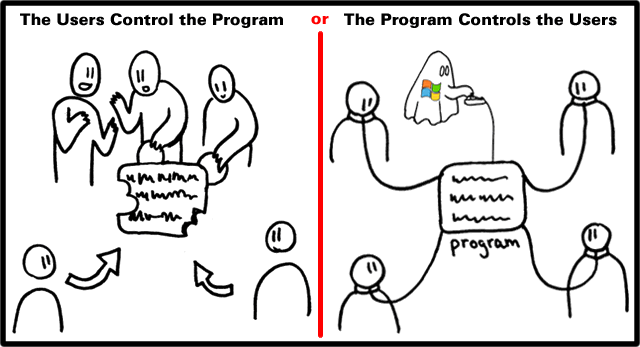
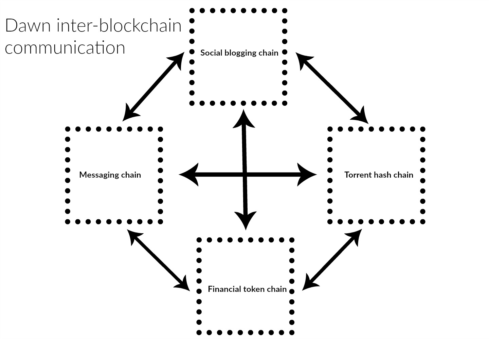
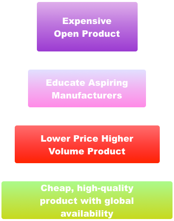

The growing trend towards the centralization of online tools has severe privacy and security implications. The underlying networks create a single point of failure, hackers have it easier to get to valuable and sensitive data, and network providers can be bullied by local governmental agencies to disclose sensitive information about their clients and users.
We are living in the post-Snowden and Wikileaks era. We know there is a substantial need to protect privacy in online communication. And things might only be beginning. The emergence of the ‘Internet of Things’ (IOT), heralds a new age in the era of mass surveillance. TV’s that record bedroom conversations, phones and tablets tracking your every move, and even smart glassware that keeps track of what you’re drinking. Furthermore, we like this stuff and the many benefits it brings. We're simply not okay with the reality that under the current technological paradigm, it's impossible to be sure if our conversations are secure. We aim to solve that, preserving the pace of innovation for all people, while protecting their privacy.

This is where the case for decentralization begins in our eyes. At the moment, we are forced to trust organizations in order to use the internet in the “normal” way. We trust banks keep our funds secure. We trust cloud storage services to keep our documents and data available and private. And we trust social networks to only show our pictures to the people we want. All of this requires a high level of trust in these organizations. Yet, we have no control or even information on these organizations. There is no guarantee that they won’t change their mind on privacy decisions, go completely out of business, or be acquired by a company with different views on privacy. Further, there is abundant evidence that we should NOT trust these organizations:
The core innovation of blockchain technology is its ability to validate all activity on the network in a decentralized manner, without the need for a trusted authority. We are seeing specialized blockchain applications popping up to alleviate some of the above issues such as Ethereum, Z-cash, or Namecoin. But these chains suffer from a variety of drawbacks. Current chains are energy inefficient and suffer from poor or limited performance. Just think of Bitcoin’s confirmation times.
Dawn solves these problems by creating a decentralized, Byzantine fault tolerant network of application specific blockchains. On top of that, we aim to enable an ecosystem of connected apps and websites that will empower users to use crypto-currencies in their everyday life.
Most of all, we believe it should not be difficult to create apps for blockchain projects, and will provide clear documentation on our codebase. We feel this is where other, similar projects are lacking severely and this is hurting the broad adoption of these platforms with the mainstream population. This is where we aim to dominate, creating and developing new applications for Dawn will be simple and straightforward.
Dawn works to provide:
Almost every crypto currency to date has run into issues of network speed and scalability. The main outcome of this issue is that most chains become bloated and grow to an enormous data size. Dawn aims to solve this issue by introducing the concept of application-specific chains and using an advanced interchain communication model to allow for easy transmission of information between different blockchains. The benefits of this approach are obvious. By limiting the chains to serve a specific use in our ecosystem, we can optimize them for that specific use. Thus enhancing security, speed, and scalability.
Another main benefit of the multi-chain approach, is that we can create an unlimited number of uses for the Dawn ecosystem. This gives us an unprecedented level of flexibility and gives the Dawn project a dynamic growth potential.
At first, we will launch our financial chain that handles the creation, distribution, and management of the Ray token.In the months after the launch of our token chain, we will release feature-specific chains along with the respective applications that will utilize these chains.

The adoption rate of crypto projects is relatively slow today. We feel that this is mainly due to the level of technical expertise that is needed to fully understand and use the current platforms. But also because most current platform focus on highly specific niches of business and society. This is why we will launch a social blogging platform on top of its own chain, to reach a wider audience that is not yet familiar with crypto currencies. Content creators of this platform will receive a share of the daily created Ray. We have seen this idea successfully implemented by the Steem project, but we feel that their economic model behind it was not fair and overly complicated. Our core values are simplicity and openness, and this will reflect in our social blogging platform, which will have a strong focus on sharing multimedia content. By using webtorrent we can decentralize the distribution of user-generated video content on the blockchain.
This will also foster a greater sense of community in the crypto community. And we believe that a strong community can make the difference in the adoption of projects such as this.
But even more than the community, we believe that is the combination of openness and user friendliness will make the difference here. Think about what Wordpress has done for the web. It enabled millions of people who had no previous coding experience to start creating websites. This is an empowering tool that most humans did not have access to before. This is the goal we are aiming for. Put simple, powerful, decentralized tools in the hands of the people to allow for a more fair and private distribution of the tools that are currently shaping our online world.
Disturbing news such as the _NSA implanting backdoors on cisco devices_ (http://arstechnica.com/tech-policy/2014/05/photos-of-an-nsa-upgrade-factory-show-cisco-router-getting-implant/) creates an urgent need for open hardware devices that allow end-users full control over their data and can verify the integrity of the actual device. "Open hardware," or "open source hardware," refers to the design specifications of a physical object which are licensed in such a way that said object can be studied, modified, created, and distributed by anyone. Once we have launched a hardware product, we will begin to encourage others to build it and help them to scale their production to the point where prices drop.
This gets into much of the purpose and motivation of the people behind Dawn. Today we live in a world where we accomplish what would have been considered miracles just 50 years before, and probably voodoo spells 150 years before. Out team is located in Siem Reap Cambodia, and we are able to speak to our families in Europe and the US. There are enough resources to fly around the world semi-casually. This said, due to poor design of physical products, there is a lingering and deeply harmful sensation of scarcity on planet earth today, when the reality is anything but. Some of that scarcity is true: no matter how big our goals, it isn’t going to be possible for us to make life for everyone as privileged as Bill Gates life. There are two reasons for this:
Great question! Open, modular hardware solutions are really an economic imperative, not only a personal privacy and user-control imperative. Open solutions evolve faster than closed solutions, and we’re going to study the conditions under which they evolve best, and constantly push them forward.
Everything. If we want secure networked services, we need secure hardware, and after carefully surveying the marketplace over a period of years, we’ve come to the unfortunate conclusion that nearly everything is highly insecure, and almost nothing is sufficiently open.
Essentially, one of the problems we are trying to address is access to technology. Open source software has created multiple industries in just a few decades. Open source hardware, especially when combined with new manufacturing technologies, is poised to do the same. Parts of this process will be on-chain, such as the actual open-sourcing of plans. Parts of this process will involve the mobilization of our community behind open product development.

Contributors will be compensated with a share of profits. Those profits will be earned by the blockchain, not by a business or corporation. We're not a corporation, we are much better than any corporation today is capable of being, because of the technology and design choices that we have made.
There are four main parts to the Dawn operating model:
The Dawn financial chain is the financial heart of the Dawn network. It validates every token transaction and activity on the network. It provides a decentralized and Byzantine fault tolerant encrypted database for all of the financial transactions on the Dawn network. Our blockchain technology allows for the easy creation of side-chains and apps through the use of standardized API libraries that do what the user expects them to do.
The Dawn chain will become the financial chain for different application specific chains. Every chain that uses the Ray token will be using inter-blockchain communication to share information with the financial token chain. This is done to ensure speed and scalability over a long period of time. We will first launch the Dawn financial chain and token. Over the following months we will be releasing the other features as stand-alone chains that interoperate with the Dawn block chain.
We will release documentation on how to easily launch your own chain and connect it to the Dawn chain as well.
At its launch, the Dawn network will consist of 2048 validator nodes. These nodes provide a distributed computing grid that allows for containerized application hosting, secure and anonymous VPN connections, and also ensure the integrity of the blockchain. Participants in the crowdfunding campaign who invest 10 BTC or more, will automatically get an invitation to become a validator in our network.
Our network will also allow for complete anonymous internet browsing and we will provide integration with other such networks such as Maidsafe, TOR, and Freenet.
The distributed anonymous computing network that our validators form, will support the hosting of geo-cached, containerized applications. This allows us to provide low-cost, high performance applications to the public. These hosting services will be fueled by the Ray token.
In a later stage, we will provide open-source routers that provide plug & play access to the Dawn network and its applications.
Our social network provides a user-friendly interface to publish and share multimedia or regular content on the internet. We will integrate p2p video sharing through the use of the webtorrent technology. This allows for true decentralized streaming of video content. In the case that there are no seeders available, we will be providing a seed server of last resort, so that all the user-generated content is available to every other user at all times.
We strongly believe in privacy and will implement encryption in every step of the process. All of the content will be encrypted on the social blockchain, as this allows for more control over the privacy of your content. You can choose to keep your content private, or post it publicly. Only public content will be eligible for token rewards though.
Even though we encrypt the content on the chain, it will still be easy to approach the content on the chain through any other application. It will not be limited to our social platform only. We will allow a simple export of your keys to allow even private content to be shown in other applications.
We admire the Steem project for their effort to distribute crypto tokens to a wider audience than the typical Bitcoin enthusiast. They managed to lower the hurdle to gain access to crypto dramatically. We aim to re-create that concept by allowing content creators to receive rewards based on the popularity of their content. We don't allow people to vote directly at content, but will use an algorithm that defines the most popular posts in each category and pays them out accordingly. This algorithm is based on a multitude of variables, including total views, social shares, comments, the popularity of the category. We see two main advantages to this approach:
The exact algorithm of will be published when we release this feature. We will implement a verification system and advanced harmful-bot detection scripts to ensure the fairness and integrity of these payouts.
We feel there is a huge need for decentralized encrypted communications platform. And decided to have an integrated and encrypted messaging application built into the website and wallet. This privacy centered messenger allows for fully encrypted communications between any group of users. We will also add p2p video chat to this in a later stage.
Our technology allows and encourages end-users to create their own application. There is nothing stopping you from creating your own social media platform on the Dawn blockchain that allows for your own unique type of content rewards, or that leverages another platform's rewards, for example STEEM's or indeed Dawn's.
We aim to release the back-end blockchain and beta version of the social platform in the first quarter of 2017.
Most of the current crypto currencies in existence depend network transaction fees to prevent spam. We feel that it is not inline with our project vision and values to charge users for the use of our token so we decided not to implement any kind of transactions fees on our Dawn network.
At the launch of the Genesis block, 10 million Ray tokens will be created. 75% of this will go to participants in our crowdfunding campaign, 10% to the core Dawn team, 10% to hire external consultants and advisers, and 5% for bounty rewards and other community incentives. From then on, we will create a fixed amount of 10 million Ray tokens each year.
This creates an increased supply rate in the first years, but evens out rapidly. At ten years in, the creation rate will be around 10%. A hundred years from now, the creation rate will be 1%. The goal is to keep this running for 1000 years. We feel that this system creates enough liquidity at the start, and still provides a token that can appreciate in value due to the future decline in creation rate. It also directly follows our principles of simplicity and openness in the Dawn project.
stable crypto currencies is one of the biggest challenges new crypto startups face. There have been multiple attempts to accomplish the clear benefits of blockchain technology while at the same time minimizing issues regarding the stability of value for the crypto currency tokens. Dawn tries to achieve a relative price stability by creating a market and ecosystem for the token, and by constantly providing extra value to the chain itself. In the spirit of openness and simplicity, we do not believe in overly complicated economical constructions that try to keep price stability. We feel that the laws of the free market will create a fair value of our token, as investors and users will see a constant stream of development and different uses being created for the Dawn token. This is achieved mainly because of our focus on simplicity of code.